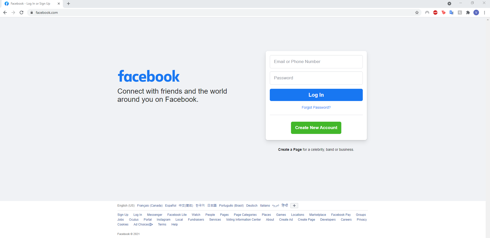

Questionnaire Interface Facebook de Vergenie
Voici une page web qui sert à savoir l'opinion des utilisateurs sur l'interface initiale de Facebook.
Prenez le temps de visiter la page web de
Facebook
.

Renseignements Personnels
Prénom:
Nom de Famille:
Questions
Quel but est-ce que l'interface usager de Facebook accomplit-il le mieux?
Fonctionnement Correct
Cohérence
Efficacité
Utilisabilité
Fiabilité
Sécurité et Intégrité des données
Vous utilisez Facebook sur quel appareil électronique?
Vous pouvez sélectionner plus qu'un choix en pesant la touche ctrl
Business
Smart Phone
Laptop
PC
Autre
Sur une échelle de 1-10 (1 étant le pire et 10 étant le meiller), notez l'interface d'usager de Facebook.
1
2
3
4
5
6
7
8
9
10
Est-ce que les couleurs de l'interface sont plaisants aux yeux.
Oui
Non
Quel(s) types d'évaluation utiliserez-vous pour tester l'interface d'usager de Faceook.
Rapport de problèmes
Analyse de logs
Expériences scientifiques
Observations d'usagers
Sondages
Tests d'utilisabilité
Commentaires:
SOUMETTRE le questionnaire
Site créé par Vergenie Howayek 300008321